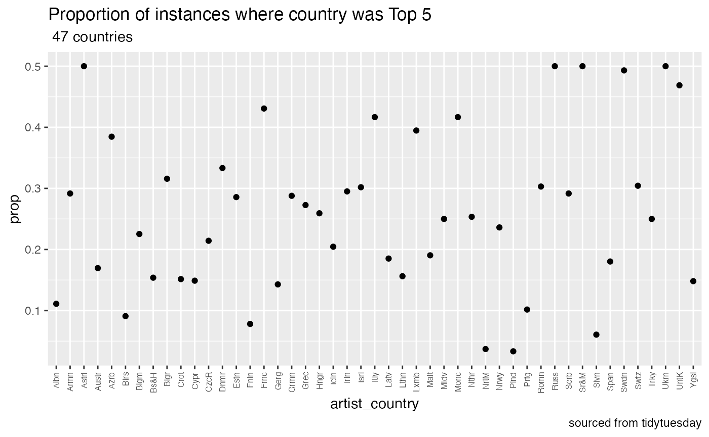

For an example analysis using tidylog I’ll be using the
eurovision dataset found in tidytuesday. The
dataset and dictionarycan be found here.
LOAD LIBRARIES
## here() starts at /Users/sparthib/Documents/tidylog##
## Attaching package: 'dplyr'## The following objects are masked from 'package:stats':
##
## filter, lag## The following objects are masked from 'package:base':
##
## intersect, setdiff, setequal, union##
## Attaching package: 'tidylog'## The following objects are masked from 'package:tidyr':
##
## drop_na, fill, gather, pivot_longer, pivot_wider, replace_na,
## spread, uncount## The following objects are masked from 'package:dplyr':
##
## add_count, add_tally, anti_join, count, distinct, distinct_all,
## distinct_at, distinct_if, filter, filter_all, filter_at, filter_if,
## full_join, group_by, group_by_all, group_by_at, group_by_if,
## inner_join, left_join, mutate, mutate_all, mutate_at, mutate_if,
## relocate, rename, rename_all, rename_at, rename_if, rename_with,
## right_join, sample_frac, sample_n, select, select_all, select_at,
## select_if, semi_join, slice, slice_head, slice_max, slice_min,
## slice_sample, slice_tail, summarise, summarise_all, summarise_at,
## summarise_if, summarize, summarize_all, summarize_at, summarize_if,
## tally, top_frac, top_n, transmute, transmute_all, transmute_at,
## transmute_if, ungroup## The following object is masked from 'package:stats':
##
## filterSAVE DATA
if(!file.exists(here("data"))){
dir.create(here("data"))
}
url<- "https://raw.githubusercontent.com/rfordatascience/tidytuesday/master/data/2022/2022-05-17/eurovision.csv"
if(!file.exists(here("data", "eurovision.csv"))){
download.file(url, here("data", "eurovision.csv"))
}LOAD DATA
Goal of the analysis is to define the success of countries.
We’ll be looking at the number of times countries came up as finalists.
The number of times a country was top 5.
The number of times the country won.
## Rows: 2005 Columns: 18
## ── Column specification ────────────────────────────────────────────────────────
## Delimiter: ","
## chr (12): event, host_city, host_country, event_url, section, artist, song, ...
## dbl (4): year, running_order, total_points, rank
## lgl (2): qualified, winner
##
## ℹ Use `spec()` to retrieve the full column specification for this data.
## ℹ Specify the column types or set `show_col_types = FALSE` to quiet this message.The number of times a country showed up in high-ranking sections
i.e., finals, semifinals etc.
We’ll be looking at the artist_country and
section variables.
## distinct: removed 1,953 rows (97%), 52 rows remaining## # A tibble: 52 × 1
## artist_country
## <chr>
## 1 Ukraine
## 2 Netherlands
## 3 Greece
## 4 Portugal
## 5 Bulgaria
## 6 Slovenia
## 7 Armenia
## 8 Norway
## 9 Lithuania
## 10 Moldova
## # … with 42 more rows## distinct: removed 2,000 rows (>99%), 5 rows remaining## # A tibble: 5 × 1
## section
## <chr>
## 1 first-semi-final
## 2 second-semi-final
## 3 grand-final
## 4 semi-final
## 5 finalTurns out there are 52 distinct countries and 5 distinct sections.
euro_sections <- euro |> select(artist_country, section)## select: dropped 16 variables (event, host_city, year, host_country, event_url, …)## group_by: 2 grouping variables (artist_country, section)## summarise: now 207 rows and 3 columns, one group variable remaining (artist_country)
euro_sections_2 <- euro_sections |> group_by(section)## group_by: one grouping variable (section)
split_euro <- group_split(euro_sections_2)
final_countries <- split_euro |> purrr::map(function(x) x[which.max(x$n), ])
#
#
# [[1]]
# # A tibble: 1 × 3
# artist_country section n
# <chr> <chr> <int>
# 1 Germany final 48
#
# [[2]]
# # A tibble: 1 × 3
# artist_country section n
# <chr> <chr> <int>
# 1 Belgium first-semi-final 12
#
# [[3]]
# # A tibble: 1 × 3
# artist_country section n
# <chr> <chr> <int>
# 1 France grand-final 19
#
# [[4]]
# # A tibble: 1 × 3
# artist_country section n
# <chr> <chr> <int>
# 1 Denmark second-semi-final 10
#
# [[5]]
# # A tibble: 1 × 3
# artist_country section n
# <chr> <chr> <int>
# 1 Andorra semi-final 4Turns out that Germany has been in the finals 48 times so far and France has been in the grand-final 19 times!
Plot Histogram
g <- ggplot(euro_sections, aes(x = artist_country, y = n )) + geom_bar(stat = "identity")+
facet_wrap(~section)+
scale_x_discrete(label=abbreviate) +
theme(axis.text.x = element_text(angle = 0, hjust = 1, vjust = 0.5, size = 6)) + theme(axis.text.y = element_text(angle = 0, hjust = 1, vjust = 0.5, size = 3.4)) +coord_flip() + labs(title= " number of times countries appeared in high-ranking sections", subtitle= "5 sections", caption = "sourced from tidytuesday")
g
euro$rank_lgl <- euro$rank |> map_lgl(function(x) x<=5)
euro_true <- euro |> group_by(rank_lgl, artist_country) |> summarise(n = n()) |> filter(rank_lgl == TRUE)## group_by: 2 grouping variables (rank_lgl, artist_country)## summarise: now 140 rows and 3 columns, one group variable remaining (rank_lgl)## filter (grouped): removed 93 rows (66%), 47 rows remaining
euro_false <- euro |> group_by(rank_lgl, artist_country) |> summarise(n = n()) |> filter(rank_lgl == FALSE)## group_by: 2 grouping variables (rank_lgl, artist_country)## summarise: now 140 rows and 3 columns, one group variable remaining (rank_lgl)## filter (grouped): removed 88 rows (63%), 52 rows remaining
euro_true_and_false <- inner_join(euro_true, euro_false, by = "artist_country")## inner_join: added 4 columns (rank_lgl.x, n.x, rank_lgl.y, n.y)## > rows only in x ( 0)## > rows only in y ( 5)## > matched rows 47## > ====## > rows total 47
euro_true_and_false <- euro_true_and_false |> mutate(prop = n.x/(n.x + n.y) )## mutate: new variable 'prop' (double) with 41 unique values and 0% NA
### TIDYLOG OUTPUT ###
# group_by: 2 grouping variables (rank_lgl, artist_country)
# summarise: now 140 rows and 3 columns, one group variable remaining (rank_lgl)
# filter (grouped): removed 93 rows (66%), 47 rows remaining
# group_by: 2 grouping variables (rank_lgl, artist_country)
# summarise: now 140 rows and 3 columns, one group variable remaining (rank_lgl)
# filter (grouped): removed 88 rows (63%), 52 rows remaining
# inner_join: added 4 columns (rank_lgl.x, n.x, rank_lgl.y, n.y)
# > rows only in x ( 0)
# > rows only in y ( 5)
# > matched rows 47
# > ====
# > rows total 47
# mutate: new variable 'prop' (double) with 41 unique values and 0% NALet’s look at proportion of instances where country was top 5
g_2 <- ggplot(euro_true_and_false, aes(x = artist_country, y = prop)) + geom_point() +scale_x_discrete(label=abbreviate) +
theme(axis.text.x = element_text(angle = 90, hjust = 1, vjust = 0.5, size = 6)) + labs(title= "Proportion of instances where country was Top 5", subtitle= " 47 countries", caption = "sourced from tidytuesday")
g_2
euro_won <- euro |> group_by(winner, artist_country) |> summarise(n = n()) |> filter(winner == TRUE)## group_by: 2 grouping variables (winner, artist_country)## summarise: now 101 rows and 3 columns, one group variable remaining (winner)## filter (grouped): removed 52 rows (51%), 49 rows remaining
g_3 <- ggplot(euro_won, aes(x = n)) + geom_dotplot(binwidth = 0.5) +scale_x_discrete(label=abbreviate) +
theme(axis.text.x = element_text(angle = 90, hjust = 1, vjust = 0.5, size = 6)) + labs(title= "Frequency of number of times countries won", subtitle= "49 countries", caption = "sourced from tidytuesday")
g_3